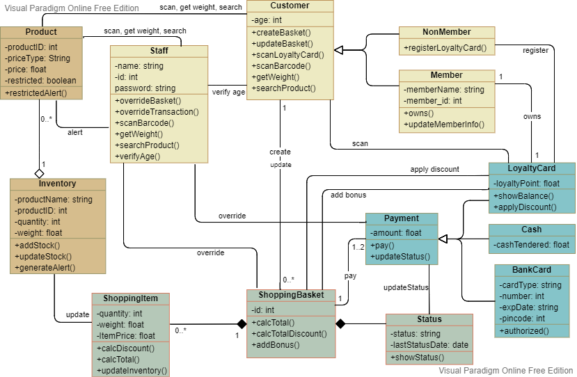

EVALUATION OF FINAL PROJECT
My evaluation of the project in weeks 7
In Unit 7, I have been asked to design software for a supermarket, and I am very excited about this assignment as I can finally get a chance to be creative and design something on my own. The lectures have been covered a lot about the class diagram and the class relationship, and we can finally apply the theory to the real-life case of the supermarket.
From this assignment, there is a detailed description of the goal of the design, which includes several objects and interactions in between. In the beginning, the description seems very complicated for me, and hard to decide where to start. I started by making a list of the classes, assigned these classes to the tables of my class diagram, and added attributes to each class. This is the most challenging step for me in this assignment because I was not able to see the bigger picture yet.
After all the classes are decided, everything seems to make more sense. I started to link the relationships from one class to another. In this step, I drafted my design on a website tool named “Visual Paradigm Online” as it has the function to link the relationship between each class table, such as composition, association …etc. I found the class diagram helpful as it visualizes the class relationships, and allowed me to see what is missing from the design.
Based on the draft of my class diagram, I manage to modify it several times to make it more logical. I also added the function to each class table whenever I added a relationship. After all the classes and the relationships are decided, I arranged the tables and the relationship lines to make them more readable from the diagram. I also added different colors to the class tables grouped by their properties to make the diagram more beautiful and logical.
Software design is a long way process for me. Even I had a draft before I started, it still required me a lot of modifications to enhance the software all the time. For example, there was a “self-checkout machine” class in my first draft. Then I decided to remove it after I realized it is redundant.
After I finished the Unit 11 assignment, I even noticed more mistakes I had made and realized more modifications can be applied. This assignment also makes me question more about day-to-day life as it makes me realize many simple topics can link to the class diagram concept. I start to think more whenever I visit a supermarket and wonder how the software can be enhanced. I am happy to have this assignment which gave me the chance to be creative and learn from my own mistake during the designing process.
My evaluation of the project in weeks 11
- Appraise and evaluate critically the concepts and principles of information systems.
- Design or modify and document an object-oriented information system using appropriate tools.
- Develop an object-oriented information system design, implementing this knowledge in applicable programming languages, such as Python and SQL.
- Develop, implement and evaluate critically information system solutions to facilitate business decisions.
- © Untitled
- Design: HTML5 UP